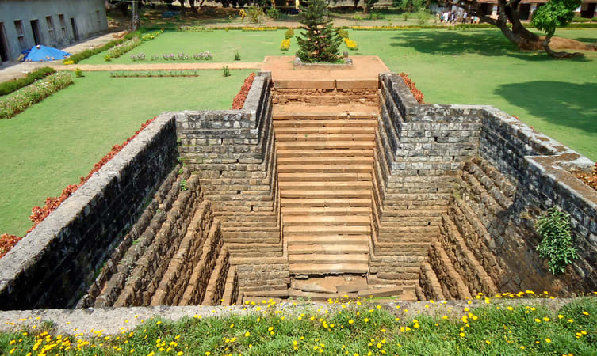

Celebrated as the Granary of Kerala, Palakkad is a vast stretch of fertile plains interspersed with hills, rivers, mountain streams and forests. The gateway to Kerala from the north, a 40 kilometre break in the mountains known as the Palakkad Gap gives access to this land situated at the foot of the Western Ghats. The pass acts as a corridor between Kerala and the neighbouring Tamil Nadu and played a key role in the trade relations between the east and west coasts of peninsular India. Deriving its name from the Malayalam words Pala (Alsteriascholaris) and Kadu (forest), this place was once a stunning expanse of forest covered with the sweet-scented flowers of the Pala tree. A potpourri of Tamil and Kerala culture, some of the finest Carnatic musicians hail from this district which continues to be a principally agrarian society.
Spread over an area of nearly 400 square meters, the wildlife sanctuary is one of the most famous Palakkad tourist places for its Wild Tiger Reserve. Wildlife enthusiasts and thrill seekers will find it perfect to spend a day among the plethora of flora and fauna of the sanctuary along with the large population of royal Bengal tigers housed here. Set against the backdrop of Anaimalai Hills and Nelliampathy Hills, the sanctuary is a heaven for nature lovers.
One of the most historically important Palakkad tourist places is the Palakkad fort or Tipu’s fort. Spend a day celebrating picnic in the sprawling green grounds of the fort with your family and enjoy looking at the various statues in the complex. Or go for a morning or evening jog on the running track running along the moat surrounding the fort. History aficionados can spend a few hours enjoying the museum located within the grounds admiring the renovation of the fort by Archaeological Survey of India. Architecture buffs are attracted to the fort for its beautiful French style construction.
If you are an adrenaline junkie looking for a thrill-inducing trek into the heart of God’s own country, the trail to Dhoni waterfalls is the place for you. Enjoy the three-hour trek through the lush green forests to reach the falls. The trail up the hills fills one with a sense of wonder and calmness – the greenery, the leaves rustling, the wind humming. And once you reach the falls, the mesmerizing view of turquoise waters will make it impossible to tear your eyes away from it. You can spend a perfect day of picnic near the falls.